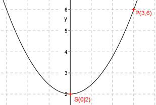

Aufgabe 53 Bestimmen Sie die Funktionsgleichung der Parabel deren Scheitelpunkt in (0|2) liegt und die durch den Punkt (3|6) geht. Eine Parabel, deren Scheitelpunkt auf der y-Achse liegt, hat eine Funktionsgleichung der Form y = ax2 + c Scheitelpunktkoordinaten xS = 0 und yS = 2 eingesetzt: 2 = a * 02 + c c = 2 Punktkoordinaten x = 3 und y = 6 und c = 2 eingesetzt: 6 = a * 33 + 2 6 = 9a + 2 |-2 4 = 9a |:9 4 a = --- 9 4 y = --- x2 + 2 9 